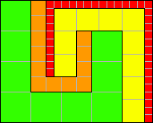
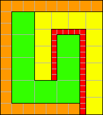
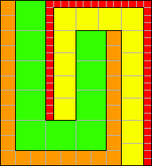
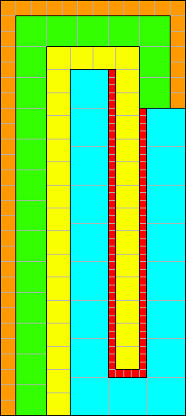
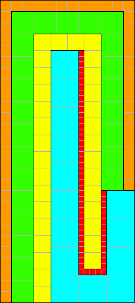

|  |  |  |
Are these the only such tilings for 4 U's (aside from extending these vertically by 12k units)? Can you prove that there are no tilings for n=2 and n=3? What are the U tilings for n=5? How about larger n?
What is the smallest n for which the first n U's can tile a square? I'll offer a prize of $10 to the smallest square tiled with consecutive U's by the end of the month, with ties going to the first one received.
Joseph DeVincentis and Philippe Fondanaiche found another 4 U tiling:
Joseph DeVincentis and Jeremy Galvagni found this 5 U tiling:
Philippe Fondanaiche found this 5 U tiling:
Berend Jan van der Zwaag found these two 5 U tilings:
|  |  |
Joseph DeVincentis found 4 trivial 5 U tilings made by wrapping an extended 4 U tiling with a width 5 U.
Joseph DeVincentis also found a U tiling of a 36×36 square using L's of sizes 1, 2, 4, 5, and 6. This isn't quite what i was looking for, but I sent him $10 anyway.